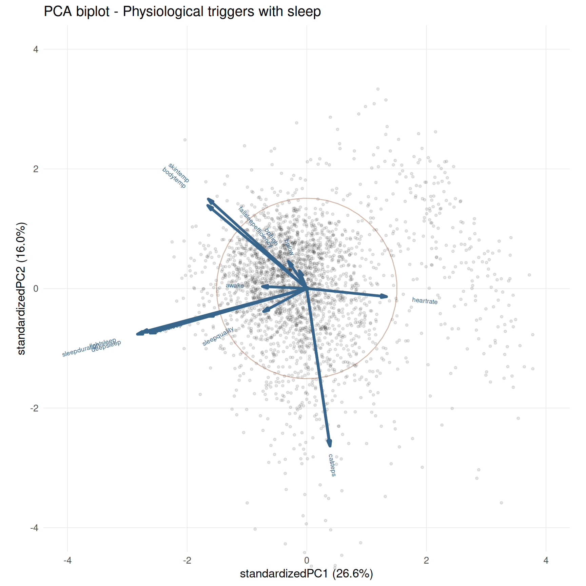
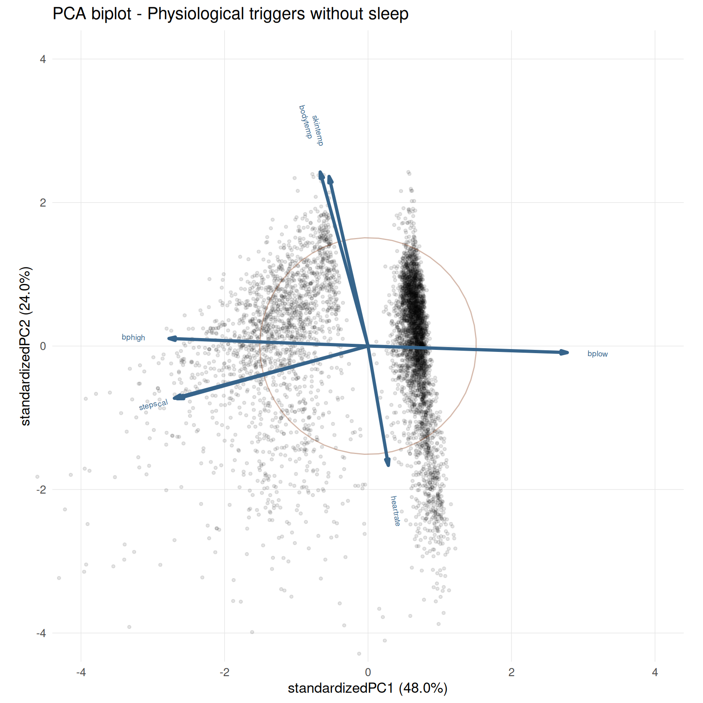
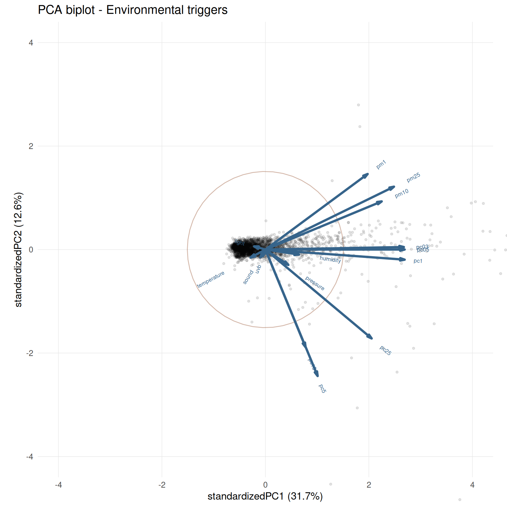
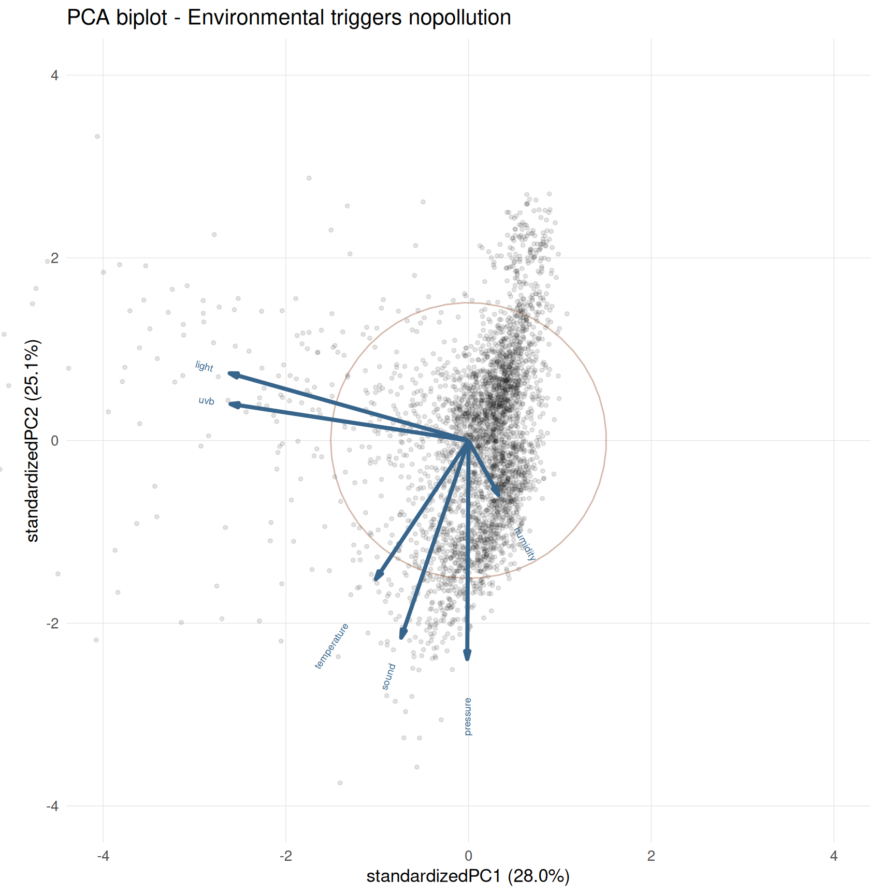
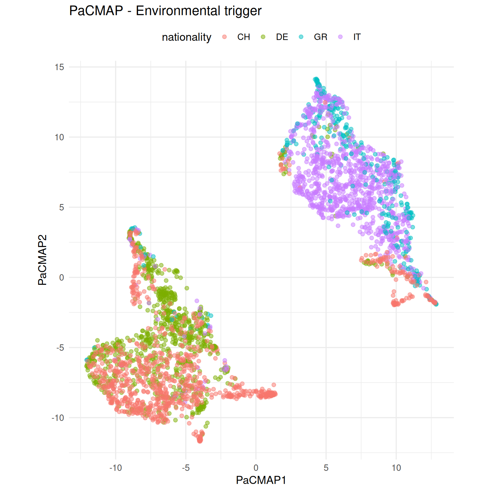
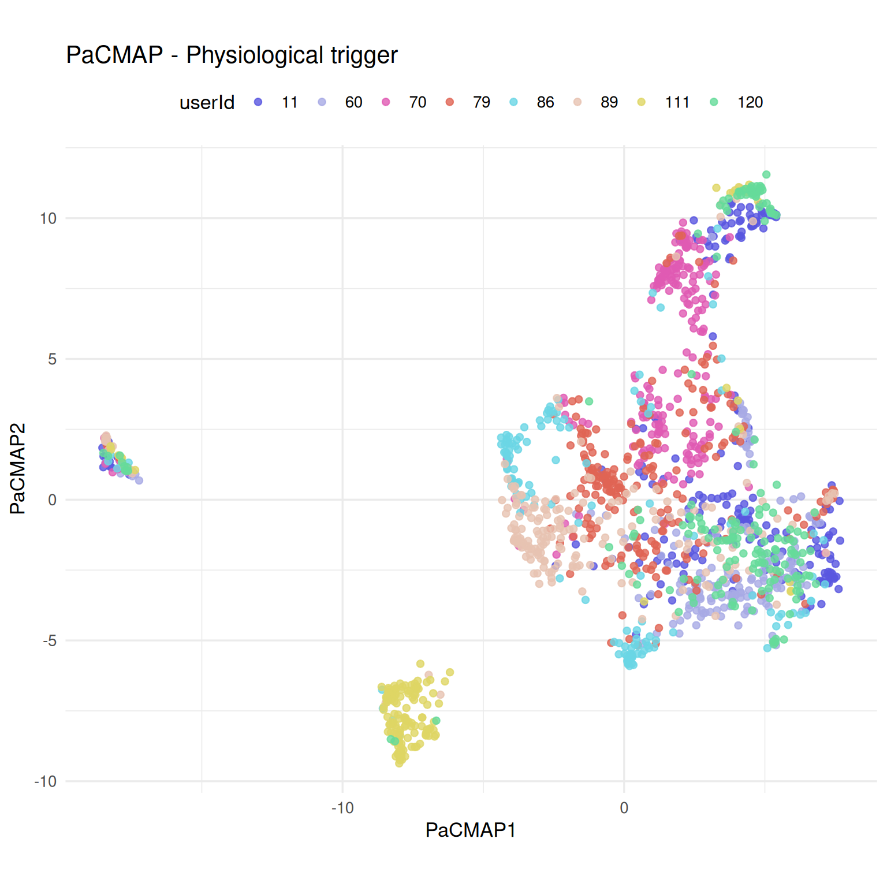

library(tidyverse)
library(ggbiplot)
library(glue)
source("../../R/load_functions.R")
triggerR <- load_trigger_functions()
rm(load_trigger_functions)
dir.create("../../outputs/dimensionality_reduction", showWarnings = F)dimensionality_reduction
if (!exists("pacmap")){
reticulate::use_condaenv("pacmap", required = TRUE)
pacmap <- reticulate::import("pacmap")
}Get Data
daily_phy <- triggerR$make_daily_wide_table(
domain_filter = "physiological",
return_meta = T, with_sleep = T,
exclude_measurements = c("oxygens", "sleeprate", "breathrate", "insomnia"))
daily_phy_nosleep <- triggerR$make_daily_wide_table(
domain_filter = "physiological",
return_meta = T, with_sleep = F,
exclude_measurements = c("oxygens", "sleeprate", "breathrate", "insomnia"))
daily_env <- triggerR$make_daily_wide_table(
domain_filter = "environmental",
return_meta = T, with_sleep = F)
daily_env_nopollution <- triggerR$make_daily_wide_table(
domain_filter = "environmental",
return_meta = T, with_sleep = F,
exclude_measurements = c("pm1", "pm25", "pm10", "pc03", "pc05", "pc1", "pc25", "pc5", "pc10"))PCA
pca_phy <- prcomp(daily_phy$data, scale. = TRUE)
pca_env <- prcomp(daily_env$data, scale. = TRUE)
pca_phy_nosleep <- prcomp(daily_phy_nosleep$data, scale. = TRUE)
pca_env_pollution <- prcomp(daily_env_nopollution$data, scale. = TRUE)PCA phy sleep
p_biplot_pca_phy <- ggbiplot(pca_phy,
var.factor = 2, point.size = 1, alpha = 0.1, var.axes = TRUE,
varname.size = 2.5, varname.adjust = 3, varname.color = "steelblue4",
circle = TRUE) +
labs(title = "PCA biplot - Physiological triggers with sleep") +
theme_minimal(base_size = 13) +
theme(panel.grid.minor = element_blank(),
panel.grid.major = element_line(linewidth = 0.25, color = "grey90")) +
coord_fixed(clip = "off", xlim = c(-4,4), ylim = c(-4,4))
p_biplot_pca_phy
ggsave("../../outputs/dimensionality_reduction/pca_biplot_phy.png", p_biplot_pca_phy,
height = 9, width = 9, dpi = 300)PCA phy no sleep
p_biplot_pca_phy_nosleep <- ggbiplot(pca_phy_nosleep,
var.factor = 2, point.size = 1, alpha = 0.1, var.axes = TRUE,
varname.size = 2.5, varname.adjust = 3, varname.color = "steelblue4",
circle = TRUE) +
labs(title = "PCA biplot - Physiological triggers without sleep") +
theme_minimal(base_size = 13) +
theme(panel.grid.minor = element_blank(),
panel.grid.major = element_line(linewidth = 0.25, color = "grey90")) +
coord_fixed(clip = "off", xlim = c(-4,4), ylim = c(-4,4))
p_biplot_pca_phy_nosleep
ggsave("../../outputs/dimensionality_reduction/pca_biplot_phy_nosleep.png", p_biplot_pca_phy_nosleep,
height = 9, width = 9, dpi = 300)PCA env
p_biplot_pca_env <- ggbiplot(pca_env,
var.factor = 2, point.size = 1, alpha = 0.1, var.axes = TRUE,
varname.size = 2.5, varname.adjust = 3, varname.color = "steelblue4",
circle = TRUE) +
labs(title = "PCA biplot - Environmental triggers") +
theme_minimal(base_size = 13) +
theme(panel.grid.minor = element_blank(),
panel.grid.major = element_line(linewidth = 0.25, color = "grey90")) +
coord_fixed(clip = "off", xlim = c(-4,4), ylim = c(-4,4))
p_biplot_pca_env
ggsave("../../outputs/dimensionality_reduction/pca_biplot_env.png", p_biplot_pca_env,
height = 9, width = 9, dpi = 300)PCA phy no pollution
pca_biplot_env_nopollution <- ggbiplot(pca_env_pollution,
var.factor = 2, point.size = 1, alpha = 0.1, var.axes = TRUE,
varname.size = 2.5, varname.adjust = 3, varname.color = "steelblue4",
circle = TRUE) +
labs(title = "PCA biplot - Environmental triggers nopollution") +
theme_minimal(base_size = 13) +
theme(panel.grid.minor = element_blank(),
panel.grid.major = element_line(linewidth = 0.25, color = "grey90")) +
coord_fixed(clip = "off", xlim = c(-4,4), ylim = c(-4,4))
pca_biplot_env_nopollution
ggsave("../../outputs/dimensionality_reduction/pca_biplot_env_nopollution.png", pca_biplot_env_nopollution,
height = 9, width = 9, dpi = 300)PACMAP
reducer_env <- pacmap$PaCMAP(
n_components = 2L,
n_neighbors = 15L,
#distance = "manhattan",
random_state = 42L,
verbose = FALSE)
reducer_phy <- pacmap$PaCMAP(
n_components = 2L,
n_neighbors = 15L,
#distance = "manhattan",
random_state = 42L,
verbose = FALSE)PACMAP ENV
pacmap_env <- reducer_env$fit_transform(scale(daily_env$data))p_pacmap_env <- as_tibble(pacmap_env) |>
setNames(c("PaCMAP1", "PaCMAP2")) %>%
mutate(event = rownames(daily_env$data), .before = 1) %>%
left_join(as_tibble(daily_env$meta, rownames = "event"), by = "event") %>%
rename(nationality = country) %>%
ggplot(aes(x = PaCMAP1, y = PaCMAP2, color = nationality)) +
geom_point(alpha = .5) +
theme_minimal(base_size = 13) +
coord_fixed() +
theme(legend.position = "top") +
labs(title = "PaCMAP - Environmental trigger")
p_pacmap_env
ggsave("../../outputs/dimensionality_reduction/pacmap_env.png", p_pacmap_env,
width = 8, height = 8, dpi = 300)PACMAP PHY
numerous_user <- daily_phy$meta %>%
rownames_to_column("event") %>%
count(userId, name = "n_events") |>
filter(n_events >= 150) |>
pull(userId)
numerous_user_events <- daily_phy$meta %>%
as_tibble(rownames = "event") %>%
filter(userId %in% numerous_user) %>%
pull(event)
daily_phy_sub <- daily_phy
daily_phy_sub$data <- daily_phy$data[numerous_user_events, ]
daily_phy_sub$meta <- daily_phy$meta[numerous_user_events, ]pacmap_phy <- reducer_phy$fit_transform(scale(daily_phy_sub$data)) %>%
as_tibble(pacmap_phy) |>
setNames(c("PaCMAP1", "PaCMAP2")) %>%
mutate(event = rownames(daily_phy_sub$data), .before = 1) %>%
left_join(as_tibble(daily_phy$meta, rownames = "event"), by = "event") p_pacmap_phy <- pacmap_phy |>
ggplot(aes(x = PaCMAP1, y = PaCMAP2, color = userId)) +
geom_point(alpha = .8) +
ggqualpal::scale_color_qualpal(colorspace = list(h = c(0, 360),
s = c(0.5, 0.7),
l = c(0.6, 0.8))) +
theme_minimal(base_size = 13) +
coord_fixed() +
theme(legend.position = "top") +
labs(title = "PaCMAP - Physiological trigger") +
guides(color = guide_legend(nrow = 1))
p_pacmap_phy
ggsave("../../outputs/dimensionality_reduction/pacmap_phy.png", p_pacmap_phy,
width = 8, height = 8, dpi = 300)phy_adonis <- vegan::adonis2(dist(scale(daily_phy_sub$data)) ~ userId,
data = daily_phy_sub$meta, permutations = 999)
phy_adonisPermutation test for adonis under reduced model
Permutation: free
Number of permutations: 999
vegan::adonis2(formula = dist(scale(daily_phy_sub$data)) ~ userId, data = daily_phy_sub$meta, permutations = 999)
Df SumOfSqs R2 F Pr(>F)
Model 7 5227.6 0.24231 70.082 0.001 ***
Residual 1534 16346.4 0.75769
Total 1541 21574.0 1.00000
---
Signif. codes: 0 '***' 0.001 '**' 0.01 '*' 0.05 '.' 0.1 ' ' 1phy_disp <- vegan::betadisper(dist(scale(daily_phy_sub$data)),
group = daily_phy_sub$meta$userId)phy_anova <- anova(phy_disp)
phy_anovaAnalysis of Variance Table
Response: Distances
Df Sum Sq Mean Sq F value Pr(>F)
Groups 7 312.84 44.691 24.98 < 2.2e-16 ***
Residuals 1534 2744.47 1.789
---
Signif. codes: 0 '***' 0.001 '**' 0.01 '*' 0.05 '.' 0.1 ' ' 1phy_perm <- vegan::permutest(phy_disp, permutations = 999)
phy_perm
Permutation test for homogeneity of multivariate dispersions
Permutation: free
Number of permutations: 999
Response: Distances
Df Sum Sq Mean Sq F N.Perm Pr(>F)
Groups 7 312.84 44.691 24.98 999 0.001 ***
Residuals 1534 2744.47 1.789
---
Signif. codes: 0 '***' 0.001 '**' 0.01 '*' 0.05 '.' 0.1 ' ' 1Note on subject-specific physiological profiles
The multivariate analysis of daily physiological profiles suggests a clear subject-specific structure. Using Euclidean distance on scaled physiological measurements, PERMANOVA (vegan::adonis2) showed a significant effect of userId on the overall multivariate profiles (R² = 0.242, F = 69.942, p = 0.001), indicating that subjects differ in their physiological patterns.
However, the test for homogeneity of multivariate dispersion (vegan::betadisper, followed by anova and permutest) was also significant (F = 24.894, p = 0.001). This indicates that the observed subject-specific structure is not only due to differences in the position of users in the multivariate space, but also to differences in within-subject daily variability. In other words, some users show more stable physiological profiles across days, whereas others display greater day-to-day variability.
Therefore, the userId effect should be interpreted as a combination of differences among subjects’ average multivariate physiological profiles and differences in their intra-subject dispersion.
Silhouette score on physiological
phy_sil <- cluster::silhouette(
x = as.integer(factor(daily_phy_sub$meta$userId)),
dist = dist(scale(daily_phy_sub$data)))
mean(phy_sil[, "sil_width"])[1] 0.02029084Although PERMANOVA showed a significant effect of userId on scaled physiological profiles using Euclidean distance (vegan::adonis2: R² = 0.242, F = 69.942, p = 0.001), the average silhouette width was close to zero (mean silhouette = 0.020). This indicates that users do not form clearly separated and compact clusters in the original multivariate space. Moreover, the significant dispersion test (vegan::betadisper: F = 24.894, p = 0.001) suggests that the subject-specific structure is partly associated with differences in within-user variability. Overall, userId has a statistically significant effect on physiological profiles, but the separation among users should be interpreted as partial rather than as well-defined clustering.